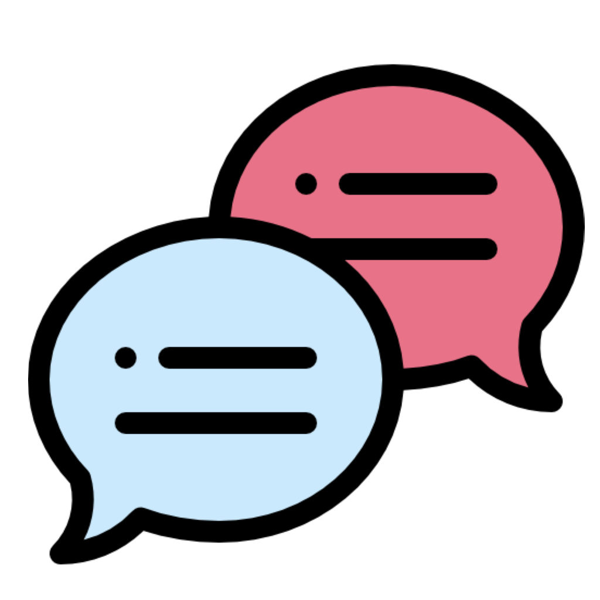

<ion-header>
  <ion-toolbar color="primary">
    <ion-title class="ion-text-center"><h2>Login</h2></ion-title>
  </ion-toolbar>
</ion-header>

<ion-content>
  <ion-card>
    <ion-item color="rojoclaro">
      <ion-label  position="floating">Correo</ion-label>
      <ion-input color="dark" type="email" name="email"  [(ngModel)]="email" required></ion-input>
    </ion-item>
    <ion-item ion-item color="rojoclaro">
      <ion-label  position="floating">Contraseña</ion-label>
      <ion-input color="dark" type="password" name="password"  [(ngModel)]="password" required></ion-input>
    </ion-item>

<ion-item class="ion-text-center">
  <ion-button color="light" size="large" slot="start" (click)="Login()"><ion-icon name="key"></ion-icon></ion-button>
  <ion-button color="dark" size="large" slot="end" (click)="limpiar()"><ion-icon name="trash"></ion-icon></ion-button>
</ion-item>
  </ion-card>
<!--   <div>
      <ion-fab vertical="center" horizontal="center" slot="fixed">
        <ion-fab-button color="secondary"><ion-icon name="key"></ion-icon></ion-fab-button>
      </ion-fab>
    </div> -->
  <ion-card>
    <ion-list>
      <ion-radio-group>
        <ion-item color="rojoclaro">
          <ion-label>Admin</ion-label>
          <ion-radio slot="start" value="admin" color="secondary" (ionFocus)="rellenarCampos('admin')"></ion-radio>
        </ion-item>
        <ion-item color="rojoclaro">
          <ion-label>Invitado</ion-label>
          <ion-radio slot="start" value="invitado" color="secondary" (ionFocus)="rellenarCampos('invitado')"></ion-radio>
        </ion-item>
        <ion-item color="rojoclaro">
          <ion-label>Usuario</ion-label>
          <ion-radio slot="start" value="usuario" color="secondary" (ionFocus)="rellenarCampos('usuario')"></ion-radio>
        </ion-item>
        <ion-item color="rojoclaro">
          <ion-label>Anonimo</ion-label>
          <ion-radio slot="start" value="anonimo" color="secondary" (ionFocus)="rellenarCampos('anonimo')"></ion-radio>
        </ion-item>
        <ion-item color="rojoclaro">
          <ion-label>Tester</ion-label>
          <ion-radio slot="start" value="tester" color="secondary" (ionFocus)="rellenarCampos('tester')"></ion-radio>
        </ion-item>
      </ion-radio-group>
    </ion-list>
  </ion-card>
  <ion-card>
    <ion-item  class="transparent-item">
        
    </ion-item>
  </ion-card>

  <ion-footer>
    <ion-toolbar>
      <ion-title></ion-title>
      <ion-card>
        <ion-card-content class="ion-text-center">
          ISL todos los derechos reservados
        </ion-card-content>
      </ion-card>
    </ion-toolbar>
  </ion-footer>
</ion-content>
